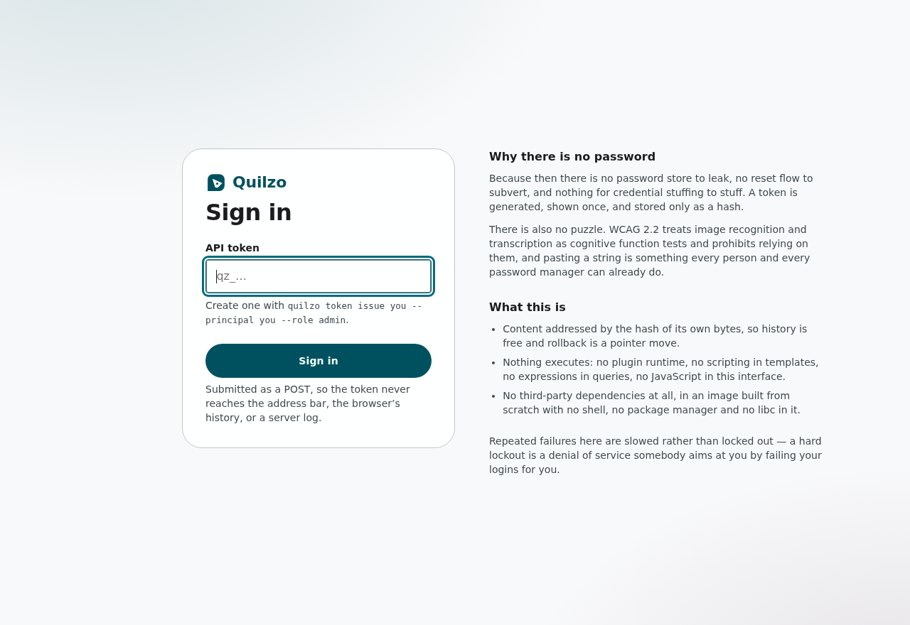
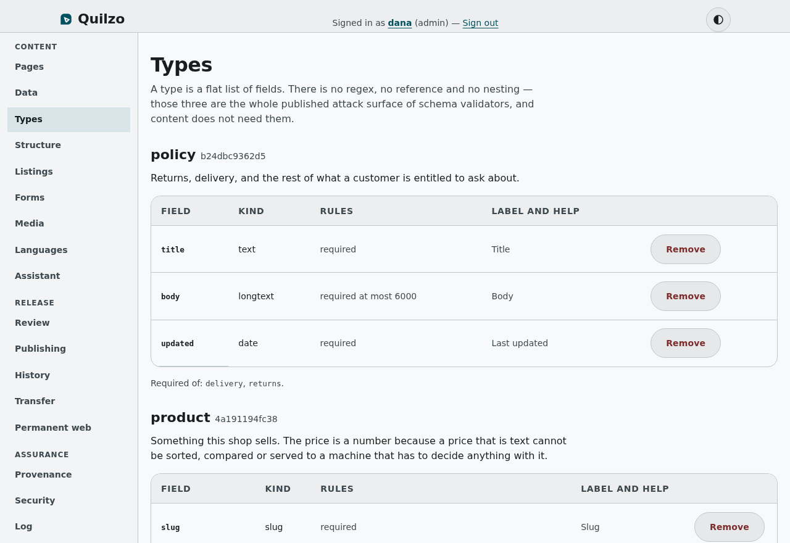
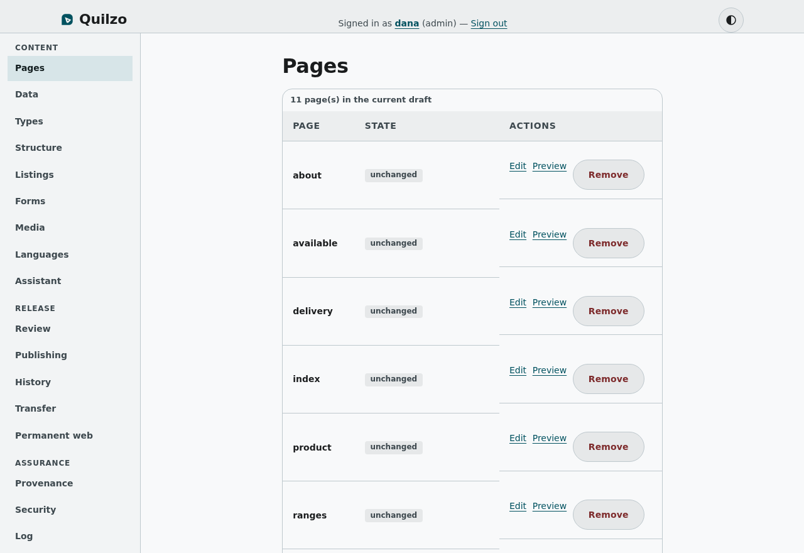
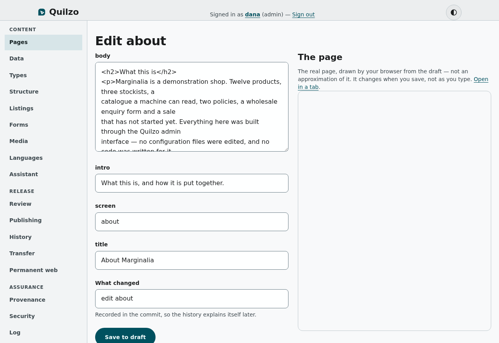
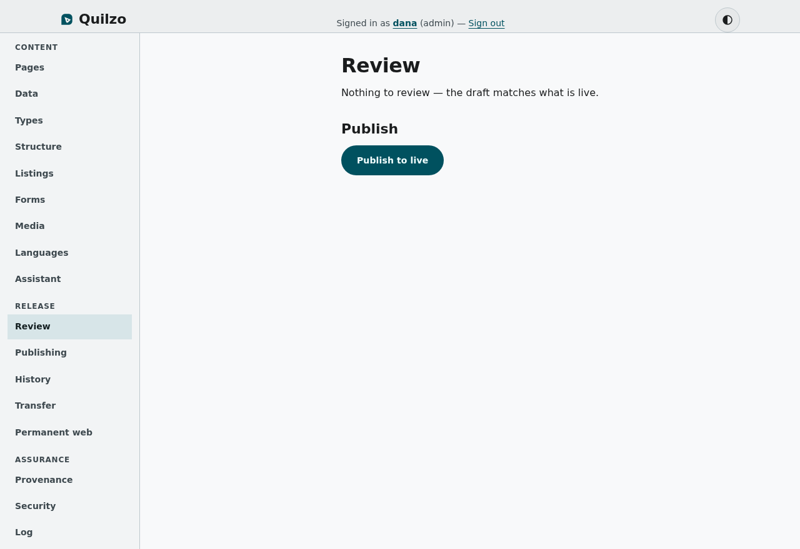
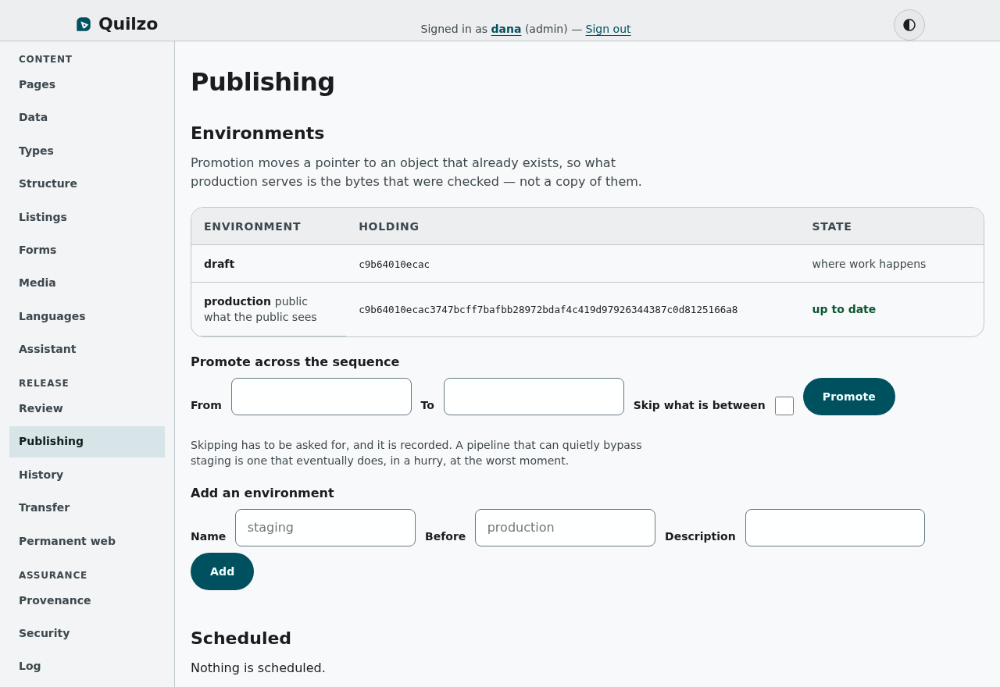
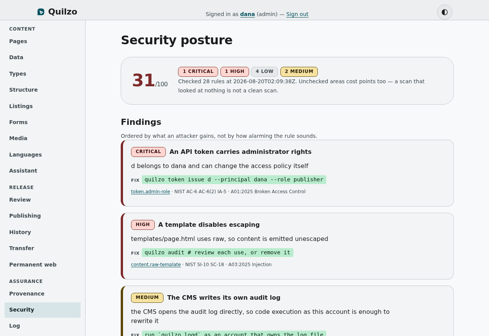
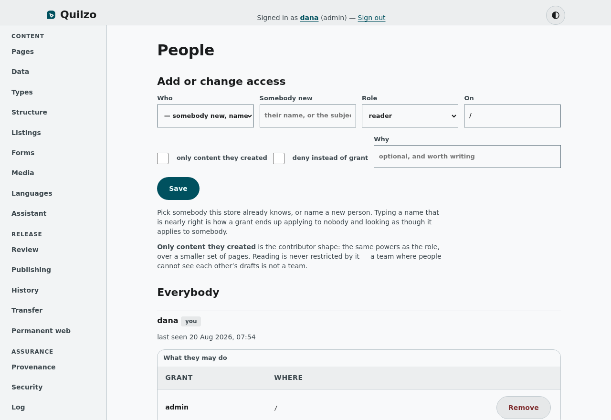

Getting started
What Quilzo is
#cced28cA content management system whose defining property is that nothing in it executes.
Quilzo manages content and publishes it. That much it shares with every other CMS. What it does differently is refuse to execute anything: there is no plugin runtime in the server, no scripting language in the templates, no expression evaluator in the queries, and no JavaScript in the interface you are reading this in.
That is not asceticism. Every one of those is a place where CMS vulnerabilities actually come from, and removing a capability removes the whole class rather than the currently-known instances of it. A template language with no method calls cannot be made to call a method. A schema format with no regular expressions cannot be given a catastrophically backtracking one.
The three ideas everything else follows from
Content is immutable and addressed by the hash of its own bytes. Nothing is ever overwritten; a change writes a new object with a new name, and the old one is still there. This is the same model git uses, and it is what makes history free, rollback a pointer move, and "the bytes production serves are the bytes staging served" an exact statement rather than a hope.
Publishing moves a pointer. A commit is a name for a tree of content; an environment is a pointer at a commit. Promotion re-points, so nothing is copied, re-serialised or rebuilt on the way to production — which means it cannot be changed on the way either.
Every control exists on all three surfaces. The web interface, the command line and the machine interface are three doors into one store, and a rule enforced at one of them is not a rule. Tests walk the source to check this, because the project has got it wrong three times.
What it is made of
One static binary with no third-party dependencies at all — not vendored, not pinned, none. The container image is distroless: the binary, CA certificates and a passwd entry, running as nonroot. No shell, no package manager, no interpreter, no libc. There is nothing in it to exploit and nothing in it to offer a kill chain that ends in "get a terminal", which is a different property from being small.
For scale rather than as a selling point: the released binary is about 15 MB stripped, and the container image about 30 MB, most of which is the base image. An earlier version of this page said 23 MB and attributed it partly to "this manual" — the manual used to be compiled into the binary and has lived in its own repository for a while, so that sentence was describing a binary that no longer exists.
Everything in this manual is reachable from the interface you are in. Where a section names a command, that command does the same thing from a terminal — they are the same code path, not two implementations that agree.
Setting it up, step by step
#8fb6d5fFrom nothing to a published site with access control, in order.
Nine steps. Each one is a thing you will actually have to do, in the order the product needs them, and each names both the screen and the command so it works whichever you have in front of you.
1. Create the store
A store is a directory. It holds the content, the history, the access policy and the credentials, and it is the only state this program has — back it up and you have backed up everything.
quilzo init2. Grant the first administrator
Access is granted before any credential exists. That ordering is deliberate: the policy names who may do what, and a token is only ever a way to prove you are one of those people. Issuing a credential for somebody the policy has never heard of gets you a credential that can do nothing.
quilzo auth grant dana admin3. Issue a credential
The secret is shown once and only a hash is stored, so it cannot be recovered — losing it means issuing another and revoking the first, which takes ten seconds and is the correct outcome.
quilzo token issue laptop --principal dana --role admin4. Start the interface
Loopback by default. An editing interface that binds every network interface the moment somebody runs it is how a development server ends up on the internet, so widening it has to be a decision somebody typed.
quilzo serve --addr 127.0.0.1:8080
Open it, paste the token, and you are signed in. There is no password: no password storage, no reset flow, no credential stuffing, and no puzzle to solve — WCAG 2.2 treats those as cognitive function tests and prohibits them.
5. Decide what your content is
Go to Types. A type is a flat list of fields, and binding a page to one means every write to that page has to satisfy it — from this interface, from the command line, from the API and from an agent, with no way to write around it.

Do this before writing much content. Adding a required field to a type that fifty pages are bound to means fifty pages that cannot be saved until somebody fills it in.
6. Write something
Pages is the list; clicking one opens an editor built from its type — the right control per field, the author's own labels, and the fields that are missing shown as empty rather than absent. A page with no type gets a plain form over whatever keys it happens to have.


7. Look at it before anybody else does
Review shows what differs from what is live, and runs the accessibility checks over the rendered result. A blocking failure stops publication unless somebody gives a reason, and the reason is recorded.

8. Publish
Publishing moves the live pointer. Everything that was checked is what goes out, and the version you moved away from is still stored — so rolling back is another pointer move rather than a restore from a backup.

9. Serve it
quilzo site --addr 0.0.0.0:8081 --base-url https://example.orgTwo processes rather than one. The public site serves published content and has no editing surface at all, so the part of the system exposed to the internet cannot write anything even if it is wrong.

Before this is reachable from outside: read the Security chapter, put TLS in front of both processes, and open the Security screen — it scans this deployment and lists what is thin, with the reasoning behind each finding.
The words this uses
#d78523aStore, object, commit, ref, environment, draft, live.
| Word | What it means here |
|---|---|
| Store | A directory holding everything: content, history, policy, credentials. |
| Object | A blob, a tree or a commit, named by the SHA-256 of its own bytes. |
| Blob | One page's fields, or one record, serialised. |
| Tree | A directory listing: names pointing at objects. Trees nest. |
| Commit | A tree plus who, when, why, and what came before. |
| Ref | A name pointing at a commit. Refs move; objects never do. |
| Draft | The ref where work happens. Not public. |
| Live | The ref the public site serves. |
| Environment | A named ref in a promotion sequence — staging, production. |
| Principal | Who somebody is. A policy is written in terms of these. |
| Binding | A grant or a denial: this principal, this role, this subtree. |
| Token | A credential proving you are a principal. Not an identity. |
Making things
Pages
#bfa062dThe list of everything in the draft, what differs from live, and the editor.
A page is a set of named fields. It is not a file, not a row and not a document with a body — the shape is entirely up to the content type it is bound to, and a page with no type may hold anything.
The editor
A bound page gets a form built from its type: the right control for each field, the labels its author wrote, the help text they wrote, and every declared field shown even when empty. An unbound page gets a plain form over the keys it happens to have, which is all that is possible when nothing has said what it should have.
Anything on the page the type does not declare is shown last and marked. Hiding it would leave a value the type rejects sitting invisibly in the page, blocking every save with an error about a field the editor never displayed.
Two people, one page
Opening a page claims it, and the claim is advisory: it never stops a write, it expires on its own, and it is shown so two people can talk before one of them loses an afternoon. What actually prevents a lost edit is compare-and-swap — the form remembers the commit it was rendered from, and a save against a draft that has moved is refused with what changed rather than silently overwriting it.
Who is holding what is listed on the Publishing screen.
Preview
Preview serves the real page to your real browser rather than drawing an approximation in a panel. A preview panel is a second renderer, and a second renderer can disagree with the one readers get.
Content types
#8d84602What a page is allowed to contain, and why this is not JSON Schema.
A type is a flat list of fields. Each field has a kind, and may be required, bounded in length, bounded in value, or limited to a fixed set of choices.
| Kind | Holds |
|---|---|
| text | one line |
| longtext | a body of prose |
| number | a number, optionally bounded |
| boolean | true or false |
| date | YYYY-MM-DD |
| url | http or https only |
| an address | |
| slug | a url-safe identifier |
| choice | one of a fixed list |
| list | several short strings |
Why not JSON Schema
Because a CMS whose users define content types is accepting schemas from the people using it, and the three most powerful keywords in JSON Schema are where its published vulnerabilities live: a pattern reaching a backtracking engine is a denial of service in one request, a $ref to an http URL is a server-side request forgery, and a self-referencing $ref with no cycle detection spins a worker until it is killed.
So there is no regular expression, no reference of any kind, no recursion and no combinators. What you give up is "matches this pattern", which is the feature carrying the vulnerability, and a content field that needs an arbitrary pattern is usually modelling something that belongs in code.
Binding, and what happens when it fails
Binding a page to a type means every write to that page has to satisfy it. The screen tells you immediately whether it currently does, because a rule whose effect is felt at the next write is a rule somebody discovers at the worst moment.
A refused save answers 422, not 400: the request was well formed and you were allowed to make it — the content simply does not match the shape this site declared.
Deleting a type that pages are bound to is refused. Validation fails closed on a binding pointing at nothing, so deleting one in use would break every page under it with an error about the configuration rather than the content.
Data and records
#3a6eb07Collections of records, for holding an application's data rather than a site's pages.
A record is a row. Records live in collections, share the store with pages, and are what makes this able to hold an application rather than a brochure — a device inventory, a control register, a product catalogue.
Identifiers
The identifier is assigned by the store and never taken from the fields. An identifier that lives in the data is an identifier somebody can edit, and once it can be edited it is a claim about the record rather than the address of it.
Querying
A query is a set of exact matches, substring matches, a time bound, a sort and a page. Never an expression — the moment a query carries an expression it needs an evaluator, and an evaluator over user-supplied input in a data store is the shape of every injection vulnerability there has ever been.
A listing is a scan with a filter, not an index. That is fine for the collections one node holds and it is said plainly rather than hidden behind a name like Query, because knowing it is a scan is what stops somebody building a page that runs twenty of them.
Forms and submissions
#8bec875What visitors send, kept deliberately outside the immutable store.
A form is a declared set of questions. Visitors post to /form/<name> on the published site, and what they send is read here.
Why submissions are not in the content store
Everything else in this product lives in a content-addressed, append-only store, and that is the central argument: nothing is overwritten, history is free, any claim about the content is checkable.
A submission must not go anywhere near it. A submission is personal data, somebody has a right to have it erased, and an append-only merkle store cannot erase anything — removing an object breaks every hash above it, and those hashes being stable is the whole point. A store that cannot forget is right for published content and wrong for a message from a member of the public.
So submissions are plain files: mutable, individually deletable, with a retention period that removes them without anybody asking. It is the least sophisticated storage here and that is the feature.
What the public server may do
Append a submission, and nothing else. It has no handle on the content store, cannot reach a ref, cannot cause a commit, and has no route that reads, edits or removes a submission. Somebody who owns that process can add rubbish and cannot read the postbag.
Spam, without a puzzle
- A hidden field people never see and scripts fill in.
- A minimum time between the form being served and coming back — a person cannot read and answer in under two seconds; a script does it in twenty milliseconds.
- A per-source rate limit, where a failed attempt counts too, so probing is slowed by its own failures.
No CAPTCHA. WCAG 2.2 treats image recognition and transcription as cognitive function tests, and the sign-in screen already refuses to use one — putting one on a public form would hold the public to a stricter standard than staff.
A refusal never says which check caught it. Telling a script that it failed the timing check tells it what to change.
Erasure
Somebody asking to be forgotten gives an address, not a submission identifier, so the screen searches every form's values for one. Individual submissions can be deleted, a whole form's can be purged, and everything expires on its own at the retention period — which is a property of the form, because an enquiry and a job application have different answers.
Exporting
A CSV cell beginning =, +, - or @ is a formula in Excel, Numbers and Sheets, and =WEBSERVICE will send the rest of the sheet to whoever typed it. Quoting does not help — the escaping is correct CSV and the spreadsheet evaluates it anyway. Exports prefix those values with an apostrophe, at export rather than at collection, so the stored submission keeps what the person actually wrote.
Listings
#8a836f2A declared query a page can show — the feature people leave for Drupal to get.
Drupal's Views is the most-cited reason organisations pick Drupal: content listings built through an interface, embedded anywhere, without writing SQL. This is that, with four differences that all come from the same place.
How it works
- Declare a listing: a name, a collection, some conditions, a row limit.
- Name it in a page's listings field.
- Read it in the template.
{% for row in listings.unmet_controls.rows %}
<li>{{ row.title }} — {{ row.owner }}</li>
{% end %}
<p>{{ listings.unmet_controls.total }} in total</p>Resolution happens before the template runs, because the template language has no calls in it. That is not a limitation being worked around — it is why a listing cannot be smuggled into a page through content.
A declared query, not a built one
A listing is a name, a collection, conditions and a limit. There is no expression anywhere in it and no evaluator to reach: the conditions become a set of values to compare. A query language is the thing that eventually gets an injection, and this does not have one.
Parameters are declared and typed
Drupal calls these contextual filters and they take their value from the URL — the correct feature, and an obvious way to hand user input to a query. Here a parameter has a name and a kind, and a value that does not satisfy the kind is refused before it reaches the filter.
A parameter with no value and no default makes the listing return nothing. The other reasonable-looking choice is to drop the condition, which is what Drupal does by default and which turns a page meant to show one person's records into a page showing everybody's.
Fields are an allowlist
A listing names what it exposes, and rows carry only that. Views hands the template the whole entity and relies on the template not to print the wrong field — which works until somebody adds a field to a content type and it appears on a public page nobody re-reviewed. Here adding a field changes nothing about what a listing shows.
The cost is bounded, and the bound is checked
Every listing has a row limit with a ceiling, a page may embed only so many, and a page that would exceed the budget fails to build rather than being served slowly. A page assembled from a dozen unbounded queries is how this feature becomes the reason a site is slow, and that is available in every product that has it.
Why this is affordable
Because a collection is indexed, keyed by the tree it was read from — which means the index cannot be stale, since different content is a different tree. Resolving a listing is a filter over records already decoded: about two milliseconds over ten thousand records rather than the four hundred a scan costs. Without that this feature could exist and could not be used.
Caching a page that shows a query
A page's identifier is normally the hash of its own bytes, which makes its ETag exact and free. That stops being true the moment the page shows a listing: the output depends on records the page's hash says nothing about. So a page with listings takes an identifier mixing its own hash, the tree the listings read, and the arguments they were given. Without that, a listing would never update — the records change, the page body does not, and every reader sees yesterday's rows.
Classification and navigation
#520cdb5Vocabularies that stay controlled, and menus that cannot point at nothing.
Two features every CMS has, and the two places the big ones reliably rot. They share a screen because they share a failure: both are structure that refers to content, and content can be deleted.
Why vocabularies are closed by default
Free-text tags do not stay a small list. The documented outcomes are an organisation with over two thousand tags, and another with fourteen hundred entries in one dropdown, most of them duplicates. "Marketing", "marketing" and "mktg" become three unrelated categories, a filter on any one returns a third of the content, and nobody can tell a gap from a spelling.
That is not a discipline problem. It is what happens when inventing a permanent category costs one keystroke and somebody else pays for the fragmentation later. So a vocabulary here is closed: terms are declared, and only declared terms apply. Opening one is possible and is a decision about that vocabulary.
- Spellings go in as synonyms and resolve to the real term, so the variants stop existing rather than accumulating.
- Terms nest, so filtering by a parent finds everything under it without anybody maintaining a list.
- A term in use cannot be deleted — the refusal names what carries it.
- Every term has a description, which is the field that decides whether two people tag alike.
Why menus cannot point at nothing
Drupal's issue queue carries this as an open problem: menu links keep the reference to a deleted target, and at least five contributed modules exist to patch around it. WordPress is quieter and no better — delete a page and the menu entry stays, silently linking to a 404.
It happens everywhere because the menu is stored in one place and the pages in another, so nothing owns the question "is this still true". Here it is asked three times:
- When an entry is saved, an internal target that does not exist is refused.
- When a menu is read, every entry carries whether it resolves, so a broken one is shown rather than rendered.
- When a site is published, an entry pointing at a page that is not going live refuses the publication.
That third one catches the version nobody checks for: an entry pointing at a page that exists in the draft and is not live yet. The link works for the person who made it and 404s for every reader, which is the worst place to find out. It is the same kind of refusal as an inaccessible page, with the same recorded override.
External links
Checked for shape and never fetched. Making requests from a publish gate would turn this into a scanner of somebody else's infrastructure. Only http and https are accepted: a menu entry becomes a link in a page a reader clicks, so a javascript: or data: target is script execution with a friendly label on it.
Renaming a page
Retargeting rewrites every entry that named the old page. Without it, a rename means finding every menu by hand — which is the manual step that does not happen, and is how the dangling entry gets there.
Media
#721c952Images and files: what is accepted, what happens to them, and why an SVG is not.
Every upload is decoded rather than sniffed. Magic bytes are bypassable with a polyglot, so a file has to actually parse as what it claims to be before it is stored, and each format has its own size cap — a two-hundred-megabyte PNG is not a photograph, it is a decompression bomb with a header.
What happens to an image
- It is decoded, to prove it is an image.
- It is resized to the configured bounds, if it is larger.
- It is re-encoded, which strips metadata — a photograph from a phone usually carries GPS coordinates.
- It is re-accepted, so the stored name is the hash of what is actually stored rather than of what arrived.
Descriptions are required
An image needs a description at the point it enters, not in an audit afterwards. A library full of undescribed images is a library somebody has to go back through, and nobody ever does. Marking something decorative is possible and is a claim somebody makes rather than a box they skip.
Why SVG is refused
An SVG is XML that browsers execute. Script elements, event handlers, external references and entity expansion all work inside one, and ImageTragick was the server-side half of the same problem. Export it as PNG or WebP.
Using one
The media screen shows the published path beside each file. Put that path in a page field. The name is the hash of the bytes, so the same photograph uploaded twice is stored once, a change is a different address, and these can be cached forever with nothing to purge.
Templates
#9c6641cThe language that renders a page, and the four things it cannot do.
A template is HTML with holes in it. The language has substitution, conditionals, loops and filters, and that is the entire list.
<h1>{{ page.title }}</h1>
{{ if page.subtitle }}<p>{{ page.subtitle }}</p>{{ end }}
{{ for tag in page.tags }}<span>{{ tag }}</span>{{ end }}
<time>{{ page.published | date }}</time>What it cannot do, and why that is the feature
- No method calls. Every server-side template engine with a serious history of remote code execution got there through method access on objects reachable from the context.
- No arbitrary attribute traversal. There is no way to walk from a page to the object graph behind it.
- No includes from a path. A template cannot be made to read a file whose name came from content.
- No evaluation. There is no eval, no exec, and nothing that compiles a string at render time.
Filters are the extension point, and they are a closed set implemented in Go. That is the alternative to a scripting language: a fixed vocabulary of transformations rather than a general-purpose interpreter that has to be sandboxed.
Why there is no template editor here
A template decides what every page renders as. Letting the web interface write one would mean an editing session could change the markup of the whole site — which is not code execution, because the language cannot execute, but is close enough to it that the blast radius stops matching the permission. Templates are files an operator deploys, and `quilzo audit` checks them before they go.
Escaping
Output is escaped by context — inside an attribute, inside a URL, inside text — and there is no way to turn it off. A raw filter is the single most common source of stored cross-site scripting in every CMS that has one, so this does not have one.
Languages
#6cb574fLocales, translation state, and the failure that reads perfectly.
The default language keeps the page names it has. Every other language lives under its own prefix, so adding a second one moves nothing.
Stale is the interesting state
A translation records the exact version of the source it was made from. When that source changes, the translation becomes stale — and a stale translation is the failure worth naming, because it reads perfectly and says something the original no longer says.
A translation with no record is untracked, and the honest answer for it is that nothing can be said about whether it is current. That is a different state from stale and is shown as one.
Negotiation
The public site honours Accept-Language as RFC 9110 specifies, including the part most implementations miss: a quality of zero means refused, not unranked.
The assistant, and AI content
#32e83e9Describing a site to a model, and the mark the law requires on the result.
The assistant takes a description and returns a proposal. Nothing is written until somebody accepts it — and that is not a courtesy, it is the same rule everything else here follows: a model's output is untrusted input, and untrusted input does not get stored without passing the gates.
Which model
Any OpenAI-compatible endpoint: a self-hosted server, a gateway, a hosted provider. Which one is a decision about where this site's content is allowed to go, so it is configuration rather than a default, set with QUILZO_MODEL_URL and QUILZO_MODEL_KEY. No model configured is a complete configuration and the screen says so.
The mark
Accepted pages are recorded as model-generated. EU AI Act Article 50 requires AI-generated content to carry a machine-readable mark, and publishing refuses unmarked pages — because "unrecorded" is not the same as "human-written", and treating it as such is how the obligation quietly stops being met.
The mark travels in the page: meta tags and a JSON-LD block in the head of every served page, not only a row in a file on the server. A machine-readable marking has to be in the thing a machine reads.
Agents that write
Anything writing over the machine interface is marked the same way, without being asked. An agent is a model, and the one interface built for agents is the one that would otherwise forget.
Agents
#8c70b25An agent is a manifest, and the manifest is the only thing it can do.
Every other product in this space gives a model tools and hopes. This gives it a declaration — a list of capabilities, a scope, a budget and an autonomy level — and enforces that declaration at one chokepoint every operation passes through. An agent that has been completely hijacked can still do exactly what its manifest permits and nothing else.
Why the manifest is the whole design
The research settled this in 2025 and 2026: you cannot train a model into refusing every malicious instruction, and the defences that work enforce policy outside the model with a deterministic gate. CaMeL, the paper this follows, completes 77% of benchmark tasks with provable guarantees against 84% for an undefended agent — a seven-point cost for a property you can state.
So a retrieval agent that answers questions cannot write, whatever it is asked. An agent scoped to one content type cannot read another. A budget is a refusal, not a warning: a goal-seeking agent that keeps going is usually a loop, and often the injection working.
Reading content taints the run
Anything out of the store may have been written by anybody who can write a page — a form submission, an importer, a previous agent. Once an agent reads stored content, what it produced is downstream of input somebody else may have written, and a person decides whether that goes live. The rule is enforced at the gate rather than reported at the end, because a refusal after the fact is a report.
quilzo agent templates # eight archetypes, narrowest first
quilzo agent new support --kind retrieval
quilzo agent run support # walks the manifest; needs no model
quilzo agent run --model support "summarise the shop"Without --model the plan is the manifest: every capability tried once, which reports what this store answers. With it, a model chooses each action from the manifest's capabilities and cannot invent one — an operation off that list ends the run, naming the closed set it could have chosen from.
A catalogue a machine can read
#cfb240eProducts are records, a product page is one URL, and the feed is the same query the page uses.
Shopping agents in 2026 discover products and hand the purchase back to the merchant. So what a shop needs from a CMS is not a cart — it is a catalogue that says what is for sale, and somewhere to send a buyer.
One declaration, three consumers
A listing names a collection, allows specific fields and carries typed parameters. The shop page embeds it, /catalogue.json serves it, and each product page reads one record through it — so the fields on the page, in the feed and in the structured data are the same fields, decided once. A product the listing filters out has no page, which is what stops a URL being guessed into unpublished content.
Set site.catalogue to the listing you want served. A page becomes a product page by declaring detail and detail_key; schema.org Product and Offer are emitted from the same row the page rendered.
There is no cart, no checkout, no payment and no stock reservation, and there will not be. The moment this process holds a card it needs credentials, PCI scope and a threat model it does not have.
Image rights
#8c659feA licence is a publish window pointed at a file, not a text box nobody fills in.
Every content tool has a licence field on an image. Almost nobody fills it in, because it does nothing — and the one time it would have mattered, it was empty.
The failure worth catching is not "we forgot who took the photograph". It is that image rights end. A stock licence runs a term. A model release covers a campaign. A photographer's contract finishes. On the day any of those lapse nothing happens: the page stays published, the image stays served, and the site is now infringing with an audit trail proving it was deliberate.
One condition blocks, two report
An expiry that has passed stops the publication. Lapsing and undeclared are printed and let through — a gate that refuses three different things is a gate people switch off, and the lapsing warning is the half worth having, because an expired licence cannot be fixed afterwards and one ending in six weeks can be renewed.
quilzo rights # expired, lapsing, undeclared
quilzo rights set ID --licence stock:standard \
--holder "Ingrid Halvorsen" --until 2027-03-31Shipping it
The publishing process
#a06dfb7Draft, review, the gates, and what publishing actually does.
Work happens on the draft. Nothing on the draft is public — the site process serves a different ref entirely, so an unpublished page is not merely hidden, it is not there.
What review shows
Every difference between the draft and what is live, the accessibility report over the rendered pages, and which pages have no provenance record.
The gates
Three things can refuse a publication, and each can be overridden with a reason that is recorded:
| Gate | Refuses when | Override |
|---|---|---|
| Content types | a page does not satisfy its type | no override — fix the page |
| Accessibility | a blocking failure would go out | a written reason |
| Provenance | an unmarked page would go out | a written reason |
The same gates run on the command line and over the machine interface, with one difference: the machine interface has no override at all, because deciding to ship a known accessibility failure is a human decision.
What publishing does
Moves the live pointer to the draft commit. No copy, no rebuild, no cache purge. Every cache in the path notices on its own, because a page's ETag is its content hash — not derived from it, it is it — so a conditional request answers itself and cache invalidation stops being a problem.
Rolling back
The version you moved away from is still stored, so rolling back is a pointer move to a commit that already passed the gates once. That also means it runs none of them, which is why it is a permission of its own and is not available to agents.
Environments and scheduling
#d5f6d54Staging, promotion, work queued for later, and who is holding what.
An environment is a named pointer in a sequence. A store that has never configured one has exactly one, called production, pointing at the ref that has always been called live — so nothing changes for a deployment that does not want this.
Promotion is the whole argument
Elsewhere, staging and production are separate databases with a copy job between them, and "it worked in staging" is a hope: the copy can reorder, re-serialise, drop a field the schema no longer has, or run against a row somebody edited after the test.
Here, promotion re-points one name at the commit another name already holds. Production ends up byte-identical to what was tested — not equivalent, not "the same content", the same bytes, because the name of the thing is a hash of the thing.
Skipping
Promoting straight past staging is possible and has to be asked for by name, and it is recorded. A sequence exists so that things pass through it, and a pipeline that can skip silently is one that eventually does — in a hurry, at the worst moment.
Scheduling
A scheduled publication names one exact commit. Editing the draft afterwards does not change what is scheduled; it makes the entry stale, and a stale entry is reported rather than fired. Every gate runs at publication, against the content as it stands then.
quilzo schedule run # from cron, systemd, or a CronJobThere is no scheduler daemon. A long-lived process that fires timers is a second thing that can be down, and every system this runs on already has something that runs a command every minute.
The permanent web
#b63927bPublishing where the address is the content, and nobody — including us — can take it down.
IPFS is a way of naming files by what they contain rather than by where they live. An ordinary URL says "ask this server for this path", and everything depends on that server still being there and still willing. An IPFS address says "find me the bytes whose hash is this", and any machine holding them can answer.
The consequence is that the address cannot lie. Change one character of a page and it has a different address, so nobody can substitute content behind a link somebody already has. There is no "the site changed under me" and no cache to invalidate.
Why this fits Quilzo particularly well
Because it is the same idea Quilzo already uses. Every object in the store is named by the SHA-256 of its own bytes, arranged in nested trees, published by moving a pointer. IPFS names content by the SHA-256 of its own bytes, arranged in nested nodes, addressed by a root. Publishing to it is a serialisation format, not a new architecture.
What this screen does
- Renders your published site — what is live, never the draft.
- Computes the IPFS identifier for it here, from your bytes.
- Hands you a bundle to upload wherever you like.
- Checks whatever identifier the service gives you back against the one it should be.
That third step matters more than it looks. Upload a site and the service returns an identifier; use that identifier and the service is now the authority on what your content is. It can return one for something else — by bug, by re-chunking, or by compromise — and nothing downstream would notice, because the only copy of the answer came from the party being checked.
What this deliberately does not do
It does not hold your pinning credentials, does not hold a wallet, does not sign a transaction, and does not talk to a service on your behalf. The moment this program stores a token it becomes worth attacking for a reason unrelated to content; the moment it holds a key it is a custodian. Neither is needed — the hard part is knowing what the identifier should be, and that needs no third party at all.
Pointing a name at it
Set your ENS name's contenthash record to ipfs:// followed by the identifier, and readers reach it at yourname.eth.limo. You hold that key, not us. Updating the site means updating one record.
What "cannot be taken down" honestly means
It means we are not hosting your site, so we cannot remove it, and neither can anybody who serves a legal order on us. That is a real and unusual property and it is worth having.
It does not mean unreachable-by-anybody. Readers arrive through gateways, gateways run on ordinary DNS, and in 2026 the main ENS gateway was hijacked through its registrar, seized by a previous registrar, and blocked by a large ISP. The content survived all three; the path to it did not. Publish to a conventional host as well — two addresses, one hash.
Cost
Pinning a typical site runs to pennies a month, or a single payment of well under a dollar for permanent storage on Arweave. You pay it directly to whoever stores your content. Nothing in this passes through us.
Permanent means permanent. A site put on Arweave cannot be withdrawn, by you or by anybody. If your pages carry personal data, that collides with an erasure obligation, and the time to decide is before you publish rather than after.
History
#259aa8eEvery commit, and going back to one.
Every save is a commit: a tree, an author, a message, a time and a parent. Nothing is ever overwritten, so history is not a feature that was added — it is what the storage model already was.
Rolling back moves the live pointer to an earlier commit. The version you moved away from stays stored, so it is reversible in the same way and by the same operation.
Working at the same time
#0d5a011Two people saving at once, without a lock and without losing anybody’s work.
Every write says which commit it was based on. A write whose base has moved is refused, and in a store that addresses content by hash that check is exact — no timestamps, no version columns, no lock to go stale. That is the safety property and it never loses anything.
Most refusals are not real collisions
Two people editing different pages collide on the pointer and on nothing else. Two people on the same page usually touch different fields — one writes the body, the other fixes the title. A system that refuses all of that teaches people to retry without reading, which is how the genuine collisions get overwritten too.
quilzo add index=page.json --based-on 0ecf078ef9c8 --mergeThe merge keeps both sides:
draft c7929f74c183 2 page(s)
merged with 1 change(s) made while you were working
kept theirs: index.title
kept yours: index.bodyIt never decides a disagreement
A change is taken only when the other side made none, or when both made the same one. If you both changed the same field to different values, that is reported and nothing is written at all — the draft still holds their version, so no work is lost either way while somebody decides.
A merge that guessed would be a merge somebody has to audit, and nobody audits a merge that says it succeeded. That is why the automatic case is only ever the case where nobody disagreed.
Deletion is never silent
A page one person removed and another edited is a conflict: "they deleted it" and "I was writing it" are different claims and no rule can tell which was meant. A page nobody else touched is simply removed.
Locks, and why they are advisory
You can claim a page so two people do not each spend an afternoon on it. The claim expires on its own and there is no break-lock button, because it is not the thing keeping your work safe — compare-and-swap is. Every checkout system that made locks the safety property grew a break-lock button, and the button gets used until the lock means nothing.
What is not here
Two cursors moving in one document. That feature is JavaScript by construction — an editor, a transport and a CRDT running in the browser — and this interface serves no script at all.
Import, export and starters
#27f576cGetting a site in, getting one out, and starting from something.
These two decide whether this is a place you can leave, which is a reasonable thing for a customer to check before they arrive.
Export
Markdown, JSON or WordPress WXR. The export carries when each page last actually changed and the redirect map, because both are real information most systems cannot reconstruct — losing them on the way out hands somebody a site whose sitemap is wrong from its first day.
Import
Upload an export and it is read and reported without writing anything. Read the skipped list first: an importer that quietly drops half an export is worse than one that refuses, because the loss is found months later by a reader.
Media URLs found in imported content are collected and deliberately not fetched. Following them would turn a file somebody sent you into a request from inside your network to a host they chose.
Writing is a second upload with the box ticked, and it merges rather than replacing — an import that replaced the draft would delete everything the site had that the export did not mention.
Starters
A starter is a template plus sample content that renders it completely. Applying one over a page somebody wrote replaces their work with an example, so it is refused unless asked for explicitly.
Claims your business has to stand behind
#a61808fA publish gate for copy, built as substantiation rather than as a list of forbidden words.
Every tool that tried this shipped a blocked-word list, and every team switched it off within a month. The list is right about the word and wrong about the sentence: a shop with a two-year guarantee written down cannot use "guaranteed", so the rule fires on copy that is true, an author overrides it once and then always, and the control becomes decoration.
The unit is a claim and its evidence
A term is blocked unless the content carries the field that backs it up. "Guaranteed" publishes beside guarantee_terms. A recycled-content claim publishes beside its certification. Some claims nothing makes sayable, and that is a real and small category.
What the author reads changes with it. Not "you may not say that", which invites an override, but "say it and also say where it comes from" — which is a thing they can do, and when they cannot, they have learnt something true about the claim.
quilzo brand init # a starter set; edit it
quilzo brand check # every claim, and what backs it up
quilzo publish # the same check, before the pointer movesIt runs over records as well as pages, because in a shop the copy that matters is a record. Rules live in brand.json; no file means no rules, and a file that does not parse refuses the publication rather than being read as none.
Peers and replication
#722c57aOne store pulls from another over the object store, and nothing a peer sends lands on your site.
Content is addressed by the hash of its bytes, so replication is the question "which objects do you have that I do not" and nothing more. There is no protocol to design and no merge to get wrong, because a pull never lands on the live site: it arrives in quarantine and somebody adopts it.
What a peer is trusted for
Almost nothing. Every object it sends is verified against its own hash before it is stored, so a peer cannot substitute content — the address is the checksum. What a peer can do is offer you objects; what it cannot do is decide that any of them is your site.
quilzo peer add upstream https://cms.example
quilzo peer pull upstream # into quarantine, never onto live
quilzo peer adopt upstream # a person decidesThe three surfaces
On a phone, and in the share sheet
#263a4dbThe published site as an installable app, and how a share becomes a submission.
A published site ships a web app manifest, an offline page and a service worker. The worker is network-first on purpose: publishing has to take effect at once, and a cache that serves yesterday’s page is a rollback nobody asked for.
The share sheet
Point share.form at one of your forms and the manifest declares a share target. The operating system then offers your site wherever people share things, and a share arrives as an ordinary multipart form POST.
quilzo config set share.form restock
quilzo config set share.title_field subjectThat matters more here than it would elsewhere. Every other route from a browser to a device — the File System Access API, launch handlers, Web Bluetooth — is JavaScript by construction, and this interface serves none. A share target is a JSON declaration and a form POST, which is inside the design rather than against it.
A share is a submission, not a page
It arrives unauthenticated, and content anybody with a URL can create is the vulnerability every CMS with open registration has had. So it goes through the same path a browser submission does: declared fields, declared kinds, a required privacy notice, a retention period with a ceiling, and storage outside the merkle store so it can be erased.
The check that runs at startup
A share carries at most a title, some text and a URL. If the form you pointed at needs anything else, every share would be refused — weeks later, on somebody’s phone, silently. So startup says so and leaves the share sheet off:
wholesale requires contact, email, city, and a share carries only
title, text and url — so every share would be refusedFiles are not accepted yet. That would be an unauthenticated upload, and putting a quota in front of anonymous multipart is work of its own.
The content API
#14c2529HTTP for programs, with the same rules as everything else.
A read-only JSON API over published content, and a writable one where an operator has asked for it. The API screen in this interface calls it against this store, from this origin, using your session — so what you see there is what your own code will get.
| Route | Does |
|---|---|
| GET /api/v1/pages | list published pages |
| GET /api/v1/pages/{name} | one page's fields |
| GET /api/v1/collections | the record collections |
| GET /api/v1/records/{collection} | records, filtered and paged |
| GET /api/v1/records/{collection}/{id} | one record |
| PUT /api/v1/records/{collection}/{id} | write one, where writing is enabled |
Concurrency
A record's ETag is its identifier and its update time. Send it back as If-Match and the write is a compare-and-swap: refused if somebody else got there first, rather than silently overwriting them.
Scoping
A token can be narrower than the principal holding it — limited to a subtree, to certain content types, to certain locales. A credential in a build pipeline should be able to read the product pages and nothing else, and that is a property of the credential rather than of the person.
Rate limiting
Per principal after authentication, per source before it. Refusing on the source's history alone would lock out everybody behind one address, which is a denial of service aimed at your own users.
The command line
#99bb884Everything, scriptable, and the same code as the screens.
Every capability in this interface exists as a command, and they are the same code path rather than two implementations that agree. Where this manual names a command beside a screen, that is what it means.
quilzo help # every command
quilzo <command> -h # one command
quilzo --json ... # machine-readable outputAuthenticating
A token, from --token, from QUILZO_TOKEN, or from a file at ~/.quilzo/token. Reads need one too, once a store has access control configured: a store where anybody who can reach the directory can read every draft is not access control.
Exit codes
| Code | Means |
|---|---|
| 0 | it worked |
| 1 | it failed |
| 2 | a gate refused it — a check said no, which is not the same as an error |
The machine interface
#10182abWhat an agent can do here, and the larger list of what it cannot.
quilzo mcp --list # the operations
quilzo mcp --token qlz_... # speak MCP on stdinOperations are data rather than tools, so none of their descriptions enter a context window until an agent searches for one. Nineteen operations sit behind four tools.
What an agent can do
Read anything it is allowed to read, and author content: pages, records, and the listings that tell it what shape they have to be. Plus the read-only assurance operations — the scanner, store verification, the inventory, and its own activity record.
What it deliberately cannot
Grant a role, mint a credential, register an extension, change a security setting, rotate a key, export the audit log, or roll back. Twenty-two capabilities are in this interface and withheld from that one, each with its reason written next to it in the source.
The line is: anything that reads and anything that authors content belongs there; anything that changes who may do what, what code runs, or what the keys are does not. A prompt injection in a page an agent is reading is a plausible route to whatever that agent can call, and "it could grant itself a role" is not a sentence anybody should be able to write about their CMS.
Everything it writes is marked
Content written over this interface is recorded as AI-generated without being asked, and publishing refuses unmarked pages. See the AI section.
Reaching other systems
#31207a2MCP in both directions, and an allow-list that answers tool poisoning.
Quilzo runs an MCP server so a model somebody else operates can reach this store. It also calls MCP servers somebody else operates, so an agent can file something in a system this program does not implement.
Why the allow-list is the product
Of the remote MCP servers surveyed in July 2026, 17.2% were simply dead. The live risk has a name — tool poisoning: a server that adds or redefines a tool after the day somebody decided to trust it. A client that calls whatever is advertised has handed its capability list to a third party's next release.
So an integration names the tools it may call and every other name is refused, including one the server offers and one that appeared last week. quilzo integrations tools NAME lists what a server advertises and marks what you agreed to, deliberately without filtering — the difference between those two lists is the thing worth looking at.
Everything is off until an operator enables it, and a local process integration stays off until the install allows processes at all. Credentials are named in the declaration and read from the environment, never stored: an object in this store cannot be deleted, so a token written there is in the history permanently and no rotation removes it.
Access and administration
How authentication and access work
#bdf49c3Principals, roles, bindings, tokens, and the difference between proving who you are and being allowed to act.
Two separate questions, kept separate. Authentication is "who are you" and is answered by a credential or an identity provider. Authorisation is "may you do this" and is answered by the policy. Having an account is not access.
The role ladder
Four rungs, in order, each including everything below it. A total order rather than a permission matrix, because the complete answer to "what does this let people do" then fits on a screen, and a permission model nobody can read in full is one nobody checks.
| Role | Can |
|---|---|
| reader | see content and drafts |
| author | write drafts; cannot make anything public |
| publisher | publish and roll back |
| admin | manage who can do what |
| Action | Needs at least |
|---|---|
| view | reader |
| edit-draft | author |
| publish | publisher |
| rollback | publisher |
| grant | admin |
| manage-tokens | admin |
Where is the contributor role?
There isn't one, deliberately. Every CMS vocabulary has a contributor — somebody who writes drafts and cannot publish — and mapping that onto a ladder gets it wrong, because the distinction is not less power. A contributor does exactly what an author does; they do it to a smaller set of pages.
So it is a constraint on the grant rather than a rung: mark a binding own-only and it applies to content that principal created. It composes with everything — any role can be own-only, it stacks with a subtree, and it stacks with a token's own scope. A new rung would have composed with nothing.
Bindings
A binding grants — or denies — a role to a principal on a subtree. A denial wins wherever it applies, which is what makes "everything except this section" expressible without enumerating everything.
Credentials
A token proves you are a principal. The secret is shown once and only a hash is stored, so it cannot be recovered or read out of the store by anybody who gets the store.
Two lifetimes share the type on purpose. A long-lived token is the thing you keep in a secret manager. A session is minted from one at the moment of use and lives for minutes. "Generated rather than hardcoded" is not the same as "short-lived" — a thirty-day token is still a bearer credential sitting somewhere for thirty days.
Revoking a parent invalidates everything minted from it. Otherwise the sessions outlive the revocation and "revoked" is a claim rather than a fact.
Signing in with an identity provider
Any OIDC provider. Discovery happens at startup rather than at the first sign-in, so a misconfiguration is a server that refuses to start rather than a person staring at a button that does not work and no explanation.
# quilzo-root/oidc.json
{
"issuer": "https://id.example.org",
"client_id": "quilzo",
"redirect_uri": "https://cms.example.org/auth/callback",
"claim": "email",
"require_verified_email": true
}export QUILZO_OIDC_SECRET=... # never in the storerequire_verified_email defaults to true and should stay true. An unverified address is a claim by whoever signed up, and mapping it to a principal lets them choose who to be.
Throttling
Repeated failures are slowed, not locked out. NIST SP 800-63B requires throttling and prefers a soft response, because a hard lockout is a denial of service that an attacker aims at your users by failing their logins for them. Throttling keys on the source before authentication and on the principal after it, and a valid credential is always let through.
Managing people
#7dfb4cfAdding, changing and removing access, and seeing who is signed in.
The People screen is grants and credentials side by side, because they are two halves of one question and keeping them on separate screens is how somebody ends up revoking a grant and leaving a working token.

- Grant the role first. The policy is what decides; a credential only proves identity.
- Issue a credential for that principal. The secret is shown once.
- To take access away, revoke the credential and remove the grant. Either alone is incomplete.
Who is signed in
Every live session, its principal, when it was issued and when it expires, with a button to end it. Ending a session takes effect on the next request everywhere, because every process re-reads the credential store rather than trusting what it loaded at startup — a revocation that waits for a restart is a revocation with a window measured in uptime.
What people can do for themselves
Anybody can open You: see what they may do and why, see their own sessions, end any of them, set a display name, and arrange their own navigation. Nobody can change what they are allowed to do — self-service privilege escalation is the shape of most access-control failures, and it usually arrives as a profile page with one field too many.
Settings
#cde0fb0Every setting, its default, and what happens when you weaken one.
The defaults are the recommended configuration. A setting can be changed to something weaker, and that is allowed — a product that forbids it gets deployed with the whole mechanism disabled by whoever needed the exception.
What it costs is a reason. The reason goes in the audit log, lapses after a set number of days, and is reported by the security posture until it is changed back or renewed. Nothing is forbidden and nothing is silent.
Floors
A small number of settings have a floor below which they cannot go at all. These are the ones where a weaker value is not a trade-off but a broken control.
Integrations
#7955c81Webhooks, log forwarding, the identity provider, and extensions.
One screen, because it answers one question an auditor and an operator both ask: what leaves this system, and what runs inside it that we did not write.
Webhooks
https only. Over cleartext the payload is readable and the signature is replayable by anyone on the path, so it is refused rather than warned about. Each delivery is signed with a per-endpoint key, shown once when the endpoint is created — the receiver needs those exact bytes, so it is a shared key and cannot be stored hashed.
Requests go through the same address check as every other outbound request, so a webhook URL cannot be used to reach something inside your network.
Extensions
This is the alternative to a plugin runtime. An extension is a separate process with a declared manifest: what it is sent, when it runs, and the hash of the executable. It cannot see anything it did not declare — empty means nothing, not everything, because an extension that gets everything by default is one that sees the unpublished legal review because somebody added a field last Tuesday.
The binary is pinned at registration. Replacing the file on disk otherwise replaces the code with no record and no signal.
An extension that fails blocks the operation, by default. An extension registered to validate content exists to refuse some of it, so if it crashes then nothing validated that page and storing it anyway records a check that did not happen. Marking one optional is a decision to make with your eyes open, per extension.
Log forwarding
The audit log exports as OCSF, CEF or JSON Lines, with an integrity envelope over the events so the receiver can check nothing was added or dropped in transit. Identifiers stay pseudonymous unless asked for, and asking is itself recorded.
Security and privacy
Security
#5d2d3ceWhat this defends against by construction, what it defends by control, and what it does not.
Most of this product's security is subtraction. The list below is not a set of mitigations; it is a set of things that are not present to be attacked.
Removed rather than defended
| Usual vulnerability | Why it cannot occur here |
|---|---|
| Template injection to remote code execution | the template language has no method calls, no attribute traversal and no evaluation |
| Stored XSS through a raw filter | there is no raw filter; escaping is contextual and cannot be turned off |
| Plugin supply chain | no plugin runtime in the server; extensions are separate processes with pinned hashes |
| Dependency vulnerabilities | there are no third-party dependencies, and CI fails if one appears |
| Schema validator denial of service | no regular expressions, references, recursion or combinators in content types |
| Query injection | a query is a set of values, never an expression; there is no evaluator |
| SVG script execution | SVG is not an accepted upload format |
| Image decompression bombs | each format is decoded and separately size-capped |
| Container escape through a shell | the image has no shell, no package manager and no interpreter |
| XSS in the admin | the admin ships no JavaScript, and its policy forbids executing any |
Defended by control
- Cross-site request forgery: SameSite=Strict on the session cookie, plus Sec-Fetch-Site and Origin checks on every state-changing request.
- Server-side request forgery: every outbound request — imports, webhooks, calendars, the model — goes through one client that checks the resolved address at connect time, so a DNS rebind does not help.
- Credential stuffing and brute force: throttled per source before authentication and per principal after, with soft delays rather than lockout.
- Privilege escalation: the policy is the only thing that grants, no screen lets a person change their own permissions, and the machine interface cannot grant at all.
- Session theft: sessions are minted short-lived from long-lived tokens, revoking a parent invalidates its children, and every process re-reads the credential store per request.
- Path traversal: nothing caller-supplied ever becomes a path. Identifiers are validated at every boundary that could build one, on both sides.
- Tampering with the record: the audit log is a hash chain, written by a separate account, and can be anchored to a timestamp authority or a public chain.
What this does not do
Said plainly, because a security page that lists only strengths is marketing:
- It does not encrypt content at rest by default. That protects against a stolen disk, not against a process that can read the directory, and the filesystem is the trust boundary in most deployments. Turn it on where the disk is the threat.
- It does not terminate TLS. Put a reverse proxy in front, and tell the posture scan you have so it can tell interception from exposure.
- It does not send email, so it cannot alert you. It writes audit records a SIEM rule can match, which is the integration point.
- It cannot stop an administrator. Somebody with the grant permission can grant themselves anything; what it can do is make every such action a record in a chain they cannot quietly edit.
- It has not been independently audited. The scanner, the posture checks and the test suite are our own work and are not a substitute for somebody else's.
Checking it yourself
The Security screen scans this deployment and explains each finding. Under it: the static scanner over templates and content, the content policy derived from what the site actually references, the bill of materials and cryptographic inventory, store verification, and what the agents have been doing.
Evidence for an assessment
#29a3e14What to hand an assessor, generated from the running system rather than written down.
Most CMS compliance material is a PDF somebody filled in. FedRAMP 20x ended that for anyone selling to US government: since CR26 was finalised in June 2026, packages carry machine-readable evidence, at least 70% of it automated, and OSCAL output is required from 30 September 2026.
That suits a system that already knows its own configuration better than one that has to be described.
The posture scan is the source
quilzo posture scan
quilzo posture explain access.no-policy
quilzo compliance controlsEach rule reads your actual deployment — file modes, who holds admin, whether the audit log is written by a separate account, whether anything is exposed that should not be — and names the NIST SP 800-53 controls it bears on and the OWASP category it belongs to. 35 controls have an automated check.
critical No access rules exist
the policy is empty, so access is decided by the built-in
default rather than by anything you configured
fix: quilzo auth grant YOU admin
access.no-policy AC-3 AC-6 A01:2025 Broken Access ControlOSCAL
quilzo posture scan --oscal > assessment-results.jsonOSCAL 1.2.3 assessment results, generated from that scan. Not a claim of compliance — the output of an assessment, which is what the format is for and what an assessor can ingest directly.
The rest of the package
quilzo compliance sbom— CycloneDX 1.6, derived from the build. It is a short document, because there are no dependencies to enumerate.quilzo compliance crypto— every algorithm in use and its post-quantum position.quilzo siem ocsf --envelope env.json— the audit log as OCSF, CEF or JSON Lines, with an integrity envelope so the receiving system can tell whether events were removed. Identifiers are pseudonymised unless somebody explicitly asks, and asking is itself recorded.
Terms for crawlers
Automated use is licensed separately from anything else, in three documents a machine reads:
quilzo config set licence.permits search
quilzo config set licence.prohibits train,ai-summarize
quilzo config set licence.contact rights@example.orgThat publishes RSL at /license.xml, TDMRep at /.well-known/tdmrep.json, and a robots.txt pointing at both.
Search, training and AI summarisation are separate grants. From 15 September 2026 Cloudflare stops treating search indexing and AI training as one permission by default, and a site publishing a single undivided answer is answering a question that has become two.
The vocabulary is closed — search, train, ai-summarize, none — because the value is published to third parties who act on it. In an open list a typo becomes a grant nobody notices: trian in the prohibits list is a site that believes it refused training and did not. Terms that contradict themselves stop the site from starting rather than being served to a crawler that acts on whichever half it read first.
Nothing is published until you set terms. A licence file asserting terms nobody chose is worse than none, because a crawler will honour it and you never agreed to it. Enforcement still depends on crawlers choosing to honour it, exactly as robots.txt always has — what this changes is that "we never said they could" becomes a document with a date.
GDPR
Article 20 asks for a structured, commonly used, machine-readable format. Export is checked by round trip — exported, re-imported, and compared field by field — which is a higher bar than the law sets and the only check that means anything.
Article 17 is why form submissions deliberately do not live in the merkle store. An append-only store cannot erase, so the data that must be erasable is kept where erasing it is possible, and erasure works by search rather than by asking somebody to know an id.
The EU AI Act
Article 50 requires machine-readable marking of AI-generated content. Publishing an unmarked AI-generated page is refused, not warned about, and content written over the machine interface is marked without being asked. See Provenance.
Air-gapped and classified deployments
One static binary with no dependency graph to review. A distroless container with no shell, no package manager and no interpreter, running as nonroot. No telemetry, no phoning home, and no outbound request an operator did not configure. The whole state is one directory: back that up and you have backed up the content, the history, the access policy and the credentials.
None of this is an authorisation. There is no ATO, no third-party assessment and no audit behind it. These are the artefacts an assessment needs, produced automatically and continuously. Somebody still has to do the assessment.
Privacy
#a4cc6bcWhat is stored about people, what leaves, and what is pseudonymous.
The short version: this stores the least it can, sends nothing anywhere by default, and pseudonymises people in the one place it has to keep a record of them.
What is stored about a person
| Data | Why | Where |
|---|---|---|
| Principal name | the policy is written in terms of it | the access policy |
| Role and scope | what they may do | the access policy |
| Token hash | to check a presented credential | the credential store |
| Issued, expires, last used | so a stale session can be found | the credential store |
| Display name and contact | optional, self-supplied, for colleagues | the profile store |
| Pseudonym in the audit log | so actions can be correlated without naming anybody | the audit log |
That is the complete list. No password, because there are no passwords. No email address unless somebody types one into their own contact field. No analytics, no telemetry, no usage reporting, and no phoning home — the binary makes no outbound request that an operator did not configure.
Pseudonymous by default
The audit log records a keyed hash of the principal rather than the name. Actions by the same person still correlate, which is what an investigation needs, and reading the log does not hand somebody a staff list.
It can be resolved forward — compute the pseudonym for a principal this store knows and compare — so an administrator can answer "was this dana". It cannot be reversed, so somebody the policy has never heard of stays opaque.
What leaves the system
Nothing, unless configured. Each of these is an operator's decision, each is visible on the Integrations screen, and each is recorded:
- Webhooks, to endpoints an administrator registered.
- Audit exports to a SIEM, when somebody exports one.
- Requests to a model, if the assistant is configured — this is the one that sends content to a third party, and which provider is deliberately not a default.
- Timestamp and anchoring requests, which send a hash and never content.
Data subject requests
Export produces everything the store holds about the site in a portable format. A principal's own record is their bindings, their tokens and their profile row, all of which are plain files in the store directory. Removing somebody means revoking their credentials, removing their bindings and deleting their profile row.
Content history is immutable by design, so a page somebody authored keeps their name in its commit. That is the point of an audit trail and it is in tension with erasure — if that tension matters to your regulator, decide before you store personal data in page content, not afterwards.
Retention
Content and history are kept until somebody deletes the store. The audit log is append-only and is not rotated by this program, because a log that rotates itself is a log that loses the record of whoever wanted it rotated. Forward it to a system with a retention policy you control.
Provenance
#96d8153Recording what was written by a model, because publishing requires it.
A provenance record says how a page came to exist: written by a person, generated by a model, or somewhere between. It names the model where there was one and the person accountable in every case.
Publishing refuses pages with no record. Not because unmarked content is presumed to be AI, but because unrecorded is not the same as human-written, and a system that treats them as the same is a system where the obligation quietly stops being met.
The record is a content hash, so editing a page makes its provenance stale rather than silently carrying it forward. A mark that survives an unrelated rewrite is a mark about nothing.
The audit log
#0a14984A hash chain, written by another account, that this process cannot edit.
Every consequential action is recorded: who, what, to which resource, whether it succeeded, and why not when it did not. Refusals are recorded too — somebody being stopped is exactly the thing a log exists to preserve.
Why it can be trusted
- Each entry carries the hash of the one before it, so removing or altering one breaks the chain from that point on, visibly.
- The writer runs as a different account, so the process serving this interface can append and cannot rewrite. The log screen says whether that separation is actually in place in your deployment rather than assuming it.
- The chain can be timestamped by an RFC 3161 authority or anchored to a public blockchain, which makes "this record existed at this time" checkable by somebody who does not trust us.
- Principals are pseudonymous. See the Privacy section.
Reading it
The Log screen shows the entries, verifies the chain in front of you, and resolves pseudonyms for principals this store knows. It is read-only, and not because of a permission — this process has no code that writes it.
This interface
You
#1900eabYour permissions, your sessions, and how this looks to you.
Three parts, and the middle one is deliberately read-only.
- What you may do, resolved against the policy as written — including the rule that decided each answer, so "why can I not publish" has an answer on the screen.
- Your sessions. Every live credential issued to you, with the one you are using marked, and a button to end any of them. You do not need an administrator for this: a session you think has been taken should end now, not tomorrow.
- How this looks to you: light, dark or whatever your machine is set to, and the order of your own tabs.
Arranging the tabs
Buttons rather than dragging. WCAG 2.2 forbids requiring a drag gesture for any function, and pressing a button is also faster, works on a phone and works from a keyboard. Tabs move within their own group; the groups are the structure rather than a preference.
The arrangement is a cookie, so it belongs to you rather than to the store, and a screen added later appears rather than being hidden by an old preference.
Light and dark
Three states, not two: light, dark, and follow your system. The third is the default and is the one most products drop — a two-state toggle takes away "switch at sunset" with no way back.